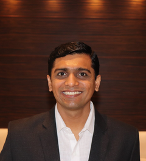
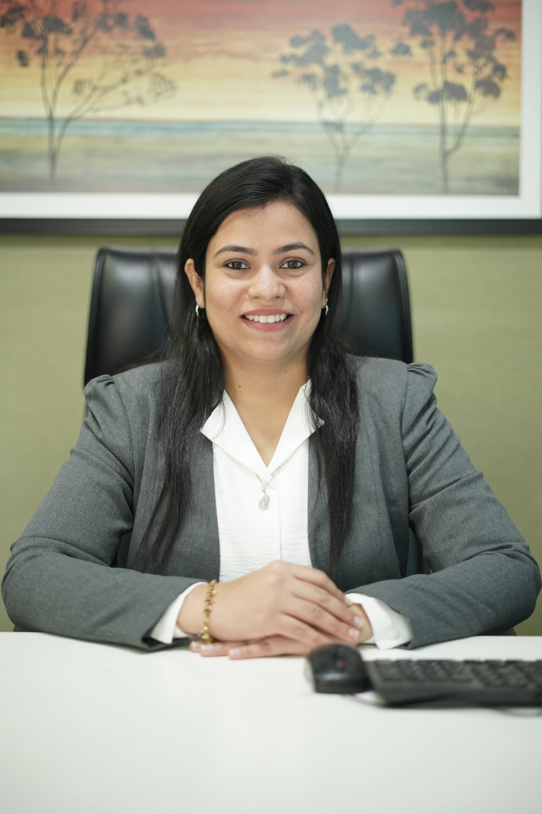
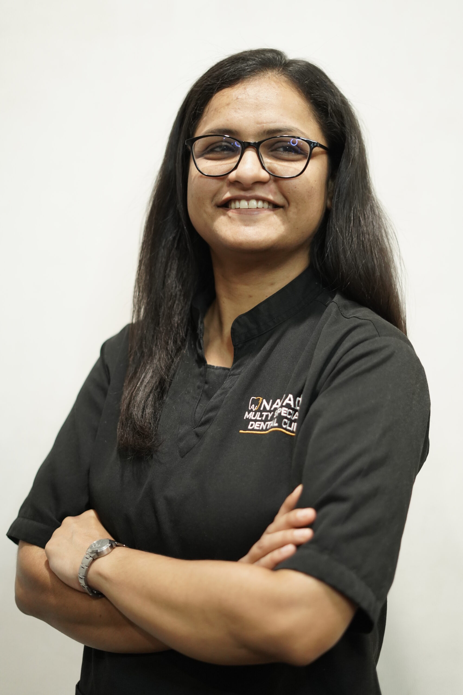
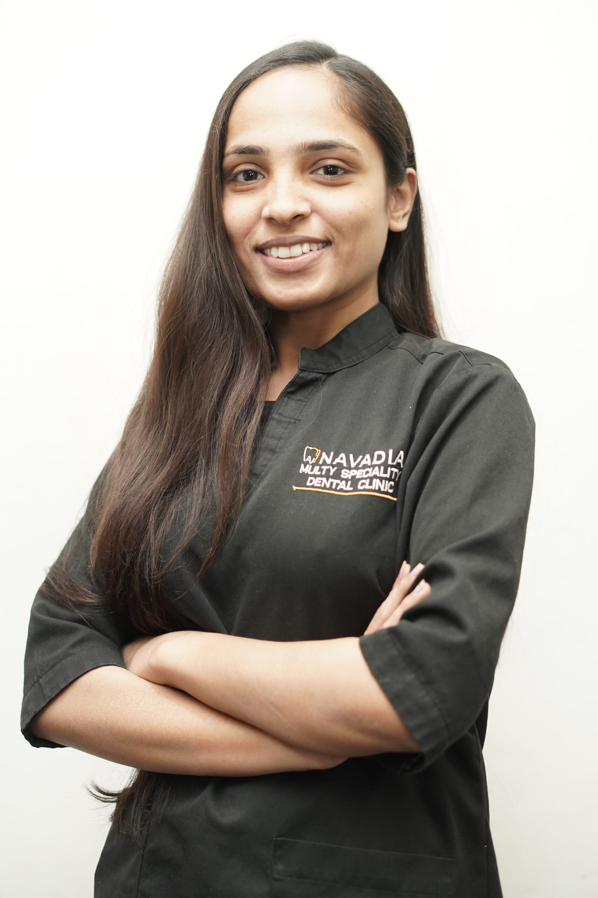

Dr. Jatin Navadia, the visionary founder of Navadia Multispeciality Dental Clinic, has been transforming smiles and redefining dental care in Surat for over a decade. His passion for dentistry and commitment to providing world-class care have made him a trusted name.
After earning his BDS degree, Dr. Navadia specialized in oral implantology, gaining recognition for his expertise in dental implants, smile makeovers, and full-mouth rehabilitations. He combines cutting-edge technology with a patient-centric approach.

Dr. Dimpal Navadia brings over 13 years of experience in the field of cosmetic dentistry. After earning her BDS degree, Dr. Navadia pursued a Master’s Degree in Smile Designing, specializing in Braces and Clear Aligners.
With numerous awards recognizing her expertise, Dr. Dimpal is dedicated to delivering top-quality care using advanced technology and high hygiene standards. She offers services like smile makeovers, dental implants, and non-invasive facial rejuvenation, ensuring every patient leaves with a brighter, healthier smile.

Hello, I am Dr. Eva Shah, a senior dentist at Navadia Multispeciality Dental Clinic located in Katargam, Surat. In our clinic, we pride ourselves on maintaining impeccable hygiene standards and utilizing cutting-edge facilities and equipment. With a commitment to providing top-notch dental care, I incorporate the latest technologies in our practice to ensure the well-being of our patients.
Greetings, I am Dr. Eva Shah, a senior dentist specializing in root canal treatments and proudly serving as a senior practitioner at Navadia Multispeciality Dental Clinic. Armed with a comprehensive BDS degree, my professional journey is defined by a commitment to excellence and a passion for preserving oral health. I am honored to have garnered awards and recognition for my outstanding contributions, a testament to the dedication and precision that defines our clinic.
Hello, I'm Dr. Deepmala Nakrani, and I am serving as the senior dentist at Navadia Multispeciality Dental Clinic in Surat. Our clinic is more than just a dental practice, it's a commitment to excellence in oral healthcare. At Navadia, we prioritize your well-being by offering state-of-the-art facilities and maintaining impeccable hygiene standards.
My unwavering commitment to dentistry extends to a particular emphasis on intricate procedures such as complicated root canal treatments, prosthesis, and crowns. Beyond accolades, I am grateful for the heartfelt appreciations acknowledging my significant contributions to the field of dentistry. My passion lies in merging cutting-edge technologies with personalized care to ensure that our patients experience a journey towards a confident and healthy smile.

Hello, I'm Dr. Archita Vaghani, a senior dentist at the forefront of Navadia Multispeciality Dental Clinic. Within our clinic, we prioritize excellence in dental care, showcasing state-of-the-art facilities and upholding the highest hygiene standards. My commitment to providing advanced treatments is reflected in our use of the latest technologies and equipment.
With a wealth of experience, my expertise extends to various realms of dentistry, with a special focus on pediatric dentistry cases and prosthetics. I've been honored with awards and recognition for my exceptional work and the high-quality services provided. Committed to excellence, I continuously strive to offer top-notch dental care to our valued patients, making our clinic a beacon of quality in oral healthcare in Surat.